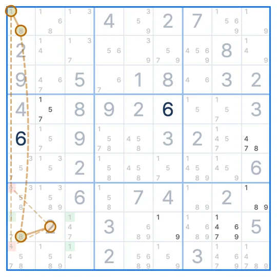

SUDOKU TECHNIQUE · Wings
WXYZ-Wing
A WXYZ-Wing is four cells whose candidates add up to only four digits, where just one of those digits sits in cells that do not all see each other. That digit can be removed from any cell that sees every cell holding it.
- Cells needed
- Four cells with four digits between them
- Shared digit
- The one spread over cells that do not see each other
- What to remove
- Cells that see every cell with it
The WXYZ-Wing pattern
The four cells are R2C2 (1, 2, 4, 7), R2C8 (1, 7), R1C3 (2, 7) and R3C1 (4, 7), four digits in all: 1, 2, 4 and 7. Each of 1, 2 and 4 sits only in two cells that see each other, while 7 is in all four.
Why does this work?
1, 2 and 4 each sit only in cells that see each other, so each can appear at most once among the four cells.
Three digits cannot fill four cells, so at least one of the four is a 7. R2C3 sees all four cells with a 7 (the same row as R2C2 and R2C8, the same box as R1C3 and R3C1). Remove its 7.
How to find the WXYZ-Wing
- Find four cells whose candidates add up to four digits, usually one cell with many candidates and three with two.
- Check that three of the digits are only in cells that see each other and only one is not.
- Remove that one digit from cells that see every cell holding it.
Common questions
Is a middle cell required?
No. Any four cells with four digits between them and one spread-out digit work, so the shape can vary.
How does it relate to the XYZ-Wing?
It is the XYZ-Wing extended to four cells and four digits.
Why are eliminations rare?
The cell has to see every cell with the shared digit, which usually happens only where a box and a line overlap.
Related techniques
IN THE SUDOKU LEAGUE APP
Stuck? A hint shows you the WXYZ-Wing
When you are stuck, a hint draws the four cells, the shared digit and the cell to clear. In Technique Practice you learn the WXYZ-Wing on a real puzzle. The first board walks you through the pattern and the reason, and on the next one you find it yourself.

EVENT · SUDOKU LEAGUE PREMIUM
1 MONTH FREE
Unlimited hints · Replay · 6 themes · Lessons
Get your coupon ▸supply